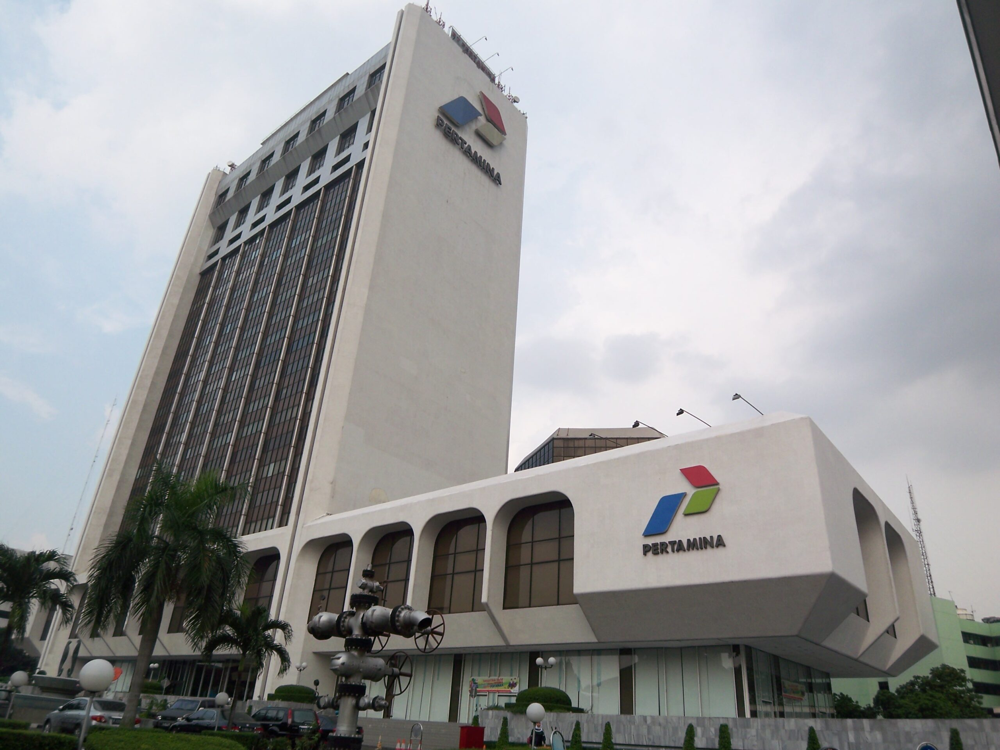
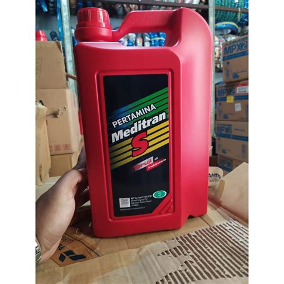
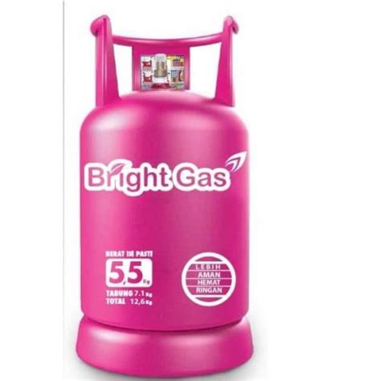
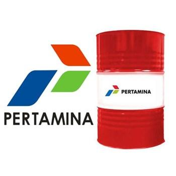
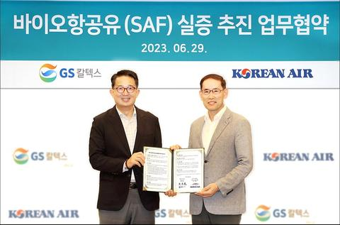
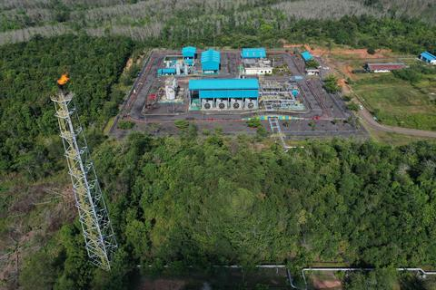
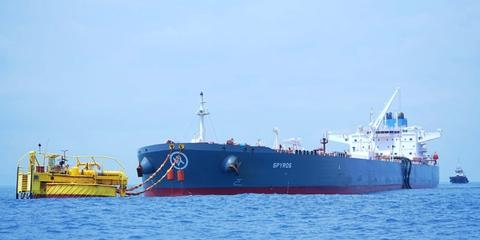
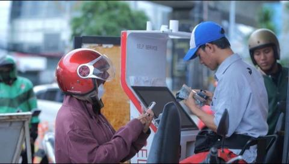

Beranda
selamat datang di PT Pertamina 2025 PT Pertamina (Persero) kembali mengukir prestasi sebagai perusahaan energi Indonesia yang mampu bersaing di tingkat global dengan peringkat 171 dalam daftar Fortune 500 Global 2025.

Profil
Nama Resmi: PT Pertamina (Persero) Jenis Perusahaan: Badan Usaha Milik Negara (BUMN) Berdiri: 10 Desember 1957 Kantor Pusat: Jl. Medan Merdeka Timur No. 1A-13, Jakarta Pusat, Indonesia Wilayah Operasi: Indonesia, Timor Leste, dan beberapa negara lain Tokoh Kunci: Simon Aloysius Mantiri (Direktur Utama), Mochamad Iriawan (Komisaris Utama) Jumlah Karyawan: Sekitar 48.000 orang (2024).
Produk
PT Pertamina (Persero) menyediakan berbagai produk energi dan petrokimia berkualitas, meliputi bahan bakar minyak (BBM) seperti Pertamax Series dan Pertalite, bahan bakar diesel (Dexlite, Biosolar), pelumas (Fastron, Meditran), serta produk LPG, petrokimia, dan energi baru. Produk-produk ini dirancang untuk solusi energi harian maupun kebutuhan industri.



AQArtikel
1.Pertamina Siap Ekspansi & Replikasi Avtur dari Minyak Jelantah
Pertamina berkomitmen mengembangkan proyek Used Cooking Oil to Sustainable Aviation Fuel (USAF) atau avtur berbahan minyak jelantah. Melalui sinergi anak usahanya, PT Kilang Pertamina Internasional (KPI) dan PT Pertamina Patra Niaga, perusahaan ini mendukung agenda transisi energi nasional serta mewujudkan strategi pertumbuhan ganda, yaitu penguatan bisnis inti dan pengembangan bisnis baru.Proyek USAF yang saat ini telah berjalan di Kilang Cilacap akan diekspansi dan direplikasi ke Kilang Dumai dan Kilang Balongan. Penandatanganan komitmen pengembangan proyek ini dilakukan di Grha Pertamina, Jakarta, pada Senin, 26 Mei 2025.Direktur Utama KPI, Taufik Aditiyawarman, menyatakan bahwa proyek ini sangat relevan untuk memanfaatkan energi baru dan terbarukan yang ramah lingkungan.

2.Pertamina Perkuat Peran Strategis Sediakan Layanan Energi Bagi Masyarakat
PT Pertamina (Persero) terus memperkuat peran strategisnya dalam menyediakan layanan energi bagi masyarakat Indonesia.Hal ini tercantum dalam peta jalan (roadmap) jangka panjang Pertamina 2025-2029, yang bertujuan mendukung program pemerintah dalam menjaga ketahanan energi dan mewujudkan swasembada energi sebagaimana program Asta Cita Presiden Prabowo Subianto.Direktur Utama PT Pertamina (Persero), Simon Aloysius Mantiri, menjelaskan bahwa Pertamina sebagai bagian dari Danantara Indonesia dan Kementerian BUMN berkomitmen memastikan keberlangsungan energi untuk masyarakat. Untuk itu, perusahaan melakukan optimasi bisnis di seluruh lini agar operasional berjalan lebih efisien dan efektif, sehingga mampu memaksimalkan nilai tambah serta memberikan manfaat timal bagi keberlanjutan perusahaan.
Galeri
1.Foto udara suasana Stasiun Pengumpul Gas (SPG) Pakugajah Pertamina EP Prabumulih Field, Kabupaten Muara Enim, Sumatera Selatan. Prabumulih merupakan salah satu situs rintisan industri hulu perminyakan di Indonesia yang telah beroperasi sejak era kolonial dan tetap produktif hingga saat ini.

2.Kapal MT Spyros yang membawa 1 juta barel minyak mentah dari Aljazair bersandar di perairan selatan Cilacap, Jawa Tengah pada Januari 2026. Pengiriman ini menandai kesuksesan operasional Pertamina di wilayah Afrika Utara dan memperkuat ketahanan energi nasional.

3.Pelanggan melakukan transaksi pengisian bahan bakar di SPBU Pertamina.Selama bulan Ramadan 2025, Pertamina Patra Niaga meningkatkan layanan dan menerapkan standar ketat untuk menjaga kualitas serta akurasi takaran BBM, sekaligus mengadakan program sosial seperti pembagian takjil.

Kontak
Alamat: Grha Pertamina, Jl. Medan Merdeka Timur No. 11-13, Jakarta Pusat 10110, Indonesia Telepon: +62 21 31906825, +62 21 31906831 Layanan Pelanggan Call Center: 135 (tersedia 24 jam) WhatsApp: +62 811-1350-135 Email: pcc135@pertamina.com Kontak Lainnya Informasi Publik: infopublik@pertamina.com Situs Web: www.pertamina.com